I Built a Transformer From Scratch.
Here's the Shape Trace Nobody Shows You.
Every Transformer explanation gives you the same four things: an architecture diagram, the attention formula, a paragraph about queries and keys, and the implicit signal that the rest is implementation detail. Most stop there.
Nobody shows you what happens to the actual numbers.
Not the formula in the abstract — what the tensor contains after each step. What Q looks like after the projection: not just "(B, heads, seq, d_k)" mentioned once in a caption, but the actual values and why they differ from the input. What the attention scores are before and after softmax, and what it means that every row sums to exactly 1. What the residual addition does to each vector, layer after layer. The gap between reading a Transformer explanation and being able to implement one is full of these unshown steps.
I built a Transformer from scratch for English-to-German translation, initialized all weights randomly, and traced a complete forward pass on two real sentences — no training, no shortcuts. Every matrix multiply, every reshape, every softmax, every residual addition. This is that trace.
The configuration is small on purpose: d_model=4, 2 attention heads, batch_size=2, vocab_size=14. Each token becomes a 4-dimensional vector instead of GPT-2's 768 or GPT-3's 12,288. The operations are completely identical at any scale, keeping d_model=4 just makes the numbers something you can actually read and verify. Once you can follow this trace, you can follow any Transformer.
Here's the full journey, as a shape transformation:
The full Transformer architecture — encoder on the left, decoder on the right:

The Setup
Before any tensors, we need to establish what we're working with, because everything that follows flows from these choices.
The dataset is four English–German sentence pairs. Small enough to inspect every token, varied enough to exercise all the interesting mechanics: single-token sentences, multi-token sentences, and sequences of different lengths that require padding.
| English |
|---|
| Hello |
| My name is Vraj |
| I am hungry |
| I am studying computer science |
| German |
|---|
| Hallo |
| Mein name ist Vraj |
| Ich habe hunger |
| Ich studiere Informatik |
Neural networks operate on numbers, not strings. So the first thing we need is a vocabulary: a fixed mapping from every word we know about to a unique integer. Each language gets its own separate vocabulary, because 'name' in English (token 6) and 'name' in German (token 6) are completely different things living in different semantic spaces. Sharing a vocabulary would conflate them.
English vocab (15 tokens)
| Token | ID |
|---|---|
| <UNK> | 0 |
| <PAD> | 1 |
| <SOS> | 2 |
| <EOS> | 3 |
| hello | 4 |
| my | 5 |
| name | 6 |
| is | 7 |
| vraj | 8 |
| i | 9 |
| am | 10 |
| hungry | 11 |
| studying | 12 |
| computer | 13 |
| science | 14 |
German vocab (14 tokens)
| Token | ID |
|---|---|
| <UNK> | 0 |
| <PAD> | 1 |
| <SOS> | 2 |
| <EOS> | 3 |
| hallo | 4 |
| mein | 5 |
| name | 6 |
| ist | 7 |
| vraj | 8 |
| ich | 9 |
| habe | 10 |
| hunger | 11 |
| studiere | 12 |
| informatik | 13 |
The German vocab has 14 tokens (IDs 0–13). That's where vocab_size=14 comes from, it's the size of the output distribution. At the end of the forward pass, for each decoder position, the model will produce a probability distribution over these 14 German tokens and pick the highest one.
With batch_size=2, the four sentences split into two batches. The problem: sequences within a batch must have the same length, but our sentences don't. "Hello" is 1 token; "My name is Vraj" is 4. The solution is padding: extend shorter sequences with <PAD> (token 1) until they match the longest sequence in the batch. Crucially, padding is computed per batch, not globally, each batch pads to its own maximum length. Batch 1 pads to 4; Batch 2 pads to 5.
| Batch | English sentence | Padded token IDs | Shape |
|---|---|---|---|
| 1 | Hello | [4, 1, 1, 1] | (2, 4) |
| 1 | My name is Vraj | [5, 6, 7, 8] | |
| 2 | I am hungry | [9, 10, 11, 1, 1] | (2, 5) |
| 2 | I am studying computer science | [9, 10, 12, 13, 14] |
The rest of this trace follows Batch 1, shape (2, 4) into the encoder, (2, 4, 4) after embedding. All the operations for Batch 2 are identical; the only difference is seq_len=5 instead of 4.

Batch 1 — two sentences padded to length 4, shape (2, 4).

Batch 2 — two sentences padded to length 5, shape (2, 5). The rest of this trace follows Batch 1.
Embeddings + Positional Encoding
import math, torch, torch.nn as nn
class InputEmbeddings(nn.Module):
def __init__(self, vocab_size: int, d_model: int):
super().__init__()
self.d_model = d_model
self.embed = nn.Embedding(vocab_size, d_model)
def forward(self, x):
return self.embed(x) * math.sqrt(self.d_model)
class PositionalEncoding(nn.Module):
def __init__(self, d_model: int, max_seq_len: int = 100):
super().__init__()
pe = torch.zeros(max_seq_len, d_model)
pos = torch.arange(0, max_seq_len).unsqueeze(1).float()
div = torch.pow(10000, torch.arange(0, d_model, 2).float() / d_model)
pe[:, 0::2] = torch.sin(pos / div) # even dims: sin
pe[:, 1::2] = torch.cos(pos / div) # odd dims: cos
self.register_buffer('pe', pe.unsqueeze(0)) # (1, max_seq_len, d_model)
def forward(self, x):
return x + self.pe[:, :x.size(1), :]
Why embeddings?
Token IDs are just labels. The integer 4 assigned to "hello" carries no information about what "hello" means or how it relates to "goodbye" or "hi." A model that receives raw IDs has no geometric structure to work with, no way to reason about similarity, difference, or relationship.
nn.Embedding fixes this by mapping each token ID to a learned vector in d_model-dimensional space. Once trained, semantically similar words end up near each other: "hungry" and "thirsty" cluster together, "cat" and "dog" cluster together, "sat" and "ran" cluster together. The distance and direction between embedding vectors becomes meaningful.
At initialization, which is all we have here, those positions are random. The geometry is in place for training to exploit; it just hasn't been exploited yet. The shape transformation is simple: (2, 4) token IDs become (2, 4, 4) embedding vectors. Batch of 2, 4 tokens each, 4 dimensions per token.

Why positional encoding?
Here's a problem with attention: it's order-agnostic. "The cat sat on the mat" and "The mat sat on the cat" produce exactly the same set of embeddings, just in different order, and attention treats them identically. There's no position information baked into the embeddings themselves.
This is by design. The permutation-invariance of attention is what makes it so powerful. But we need to put the order information back in explicitly, so the model can distinguish position 0 from position 3.
Positional Encoding does this by adding a deterministic, position-dependent signal to each embedding before the first attention block. The formula uses sine and cosine waves at different frequencies. Low-frequency components (dim 0 and 1) change slowly across positions, they encode coarse location. High-frequency components (dim 2 and 3) change quickly, they encode fine-grained position. Together they give every position a unique fingerprint, and nearby positions get similar fingerprints so the model can reason about relative distance.
For our config, position 0 gets [0.0, 1.0, 0.0, 1.0]. Position 1 gets [0.8415, 0.5403, 0.01, 0.9999]. Position 2 gets [0.9093, −0.4161, 0.02, 0.9998]. These values are added directly to the embeddings, no learned parameters, fully deterministic.


Shape after PE: still (2, 4, 4). The information content has changed, every vector now carries both its semantic meaning and its position, but the structure hasn't. This tensor is ready for the encoder's Multi-Head Attention block.
Encoder: Multi-Head Attention
class MultiHeadAttention(nn.Module):
def __init__(self, d_model: int, num_heads: int):
super().__init__()
assert d_model % num_heads == 0
self.d_model = d_model
self.num_heads = num_heads
self.d_k = d_model // num_heads # 4 // 2 = 2
self.W_q = nn.Linear(d_model, d_model)
self.W_k = nn.Linear(d_model, d_model)
self.W_v = nn.Linear(d_model, d_model)
self.W_o = nn.Linear(d_model, d_model)
@staticmethod
def attention(q, k, v, d_k, mask=None):
# (B, heads, seq, d_k) x (B, heads, d_k, seq) → (B, heads, seq, seq)
scores = (q @ k.transpose(-2, -1)) / math.sqrt(d_k)
if mask is not None:
scores.masked_fill_(mask == 0, -1e9)
scores = torch.softmax(scores, dim=-1)
return scores @ v # → (B, heads, seq, d_k)
def forward(self, q, k, v, mask=None):
B, q_len, _ = q.shape
k_len = k.size(1)
q = self.W_q(q) # (2,4,4) @ W_q.T → (2,4,4)
k = self.W_k(k) # (2,4,4) @ W_k.T → (2,4,4)
v = self.W_v(v) # (2,4,4) @ W_v.T → (2,4,4)
# Split into heads: (B, seq, d_model) → (B, heads, seq, d_k)
q = q.view(B, q_len, self.num_heads, self.d_k).transpose(1, 2) # (2,2,4,2)
k = k.view(B, k_len, self.num_heads, self.d_k).transpose(1, 2) # (2,2,4,2)
v = v.view(B, k_len, self.num_heads, self.d_k).transpose(1, 2) # (2,2,4,2)
x = self.attention(q, k, v, self.d_k, mask) # (2,2,4,2)
# Concat heads: (2,2,4,2) → transpose → (2,4,2,2) → view → (2,4,4)
x = x.transpose(1, 2).contiguous().view(B, q_len, self.d_model)
return self.W_o(x) # (2,4,4) @ W_o.T → (2,4,4)
What is attention actually solving?
The embedding for "sat" in "The cat sat on the mat" is the same vector regardless of context. But the meaning of "sat" depends entirely on context, who sat, where, why. A model that can't look at surrounding tokens can't capture that dependency.
Attention solves this by letting every token look at every other token and decide how much of each one to absorb. The output for position i is a weighted combination of all positions' value vectors, weighted by how relevant each position is to position i. After attention, the representation of "sat" carries information about "cat" and "mat," not just about "sat" in isolation.
Why Q, K, V?
Think of it as querying a database. Every token simultaneously plays three roles: it has a question to ask (Q, "what context is relevant to me?"), it offers an index that other queries can match against (K, "here's what I contain, in case you're looking for it"), and it has actual content to contribute (V, "here's the information you get if you attend to me"). The dot product Q × K^T scores how well each query matches each key. High score means "this key is what I was looking for."
But first, all three need to be projected through learned weight matrices, W_Q, W_K, W_V. These linear transformations map the raw embeddings into a space where the dot-product similarity actually means something meaningful. Without them, raw embedding similarity might not correspond to the attention pattern we want the model to learn.
Linear layers: the basic building block
Every projection in this trace is a linear layer. Here's what one looks like concretely: a 4×4 weight matrix. Each row of the input (one token's 4-dim embedding) is matrix-multiplied by the weight matrix to produce a new 4-dim vector. The dimensions don't change, only the representation does.
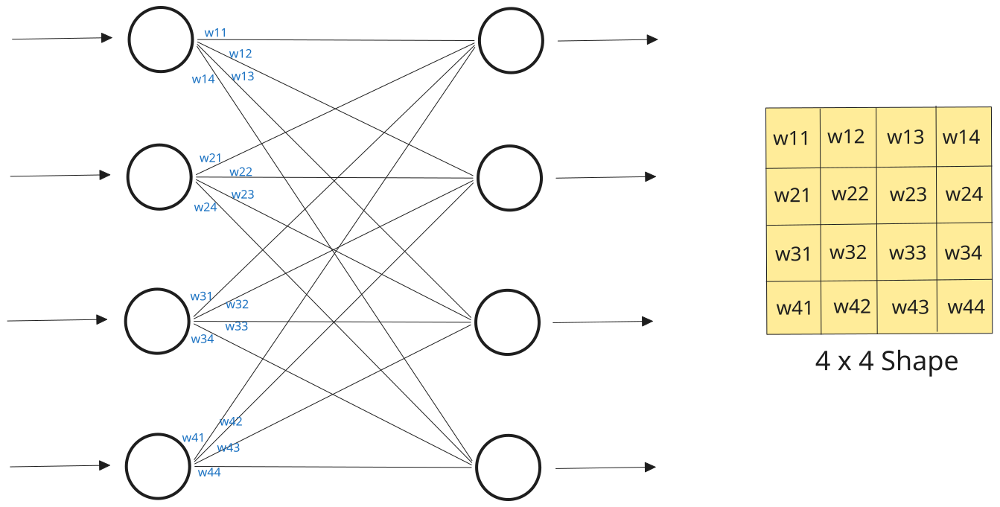
The encoder's attention block has four: W_Q, W_K, W_V for the input projections, and W_O to combine the multi-head output back. All 4×4. All randomly initialized here.

Projecting Q, K, V
The post-PE encoder tensor enters the block three times: as q, k, and v. In the encoder, all three are identical, it's self-attention, the sequence attending to itself. Each copy gets multiplied through its respective weight matrix independently.

Here's what the Q projection looks like step by step. Each row of Q (one token's embedding) is dotted with each column of W_Q to produce one output row. In practice PyTorch handles the full batch with a single matmul, but the row-by-row view is what's actually happening mathematically.
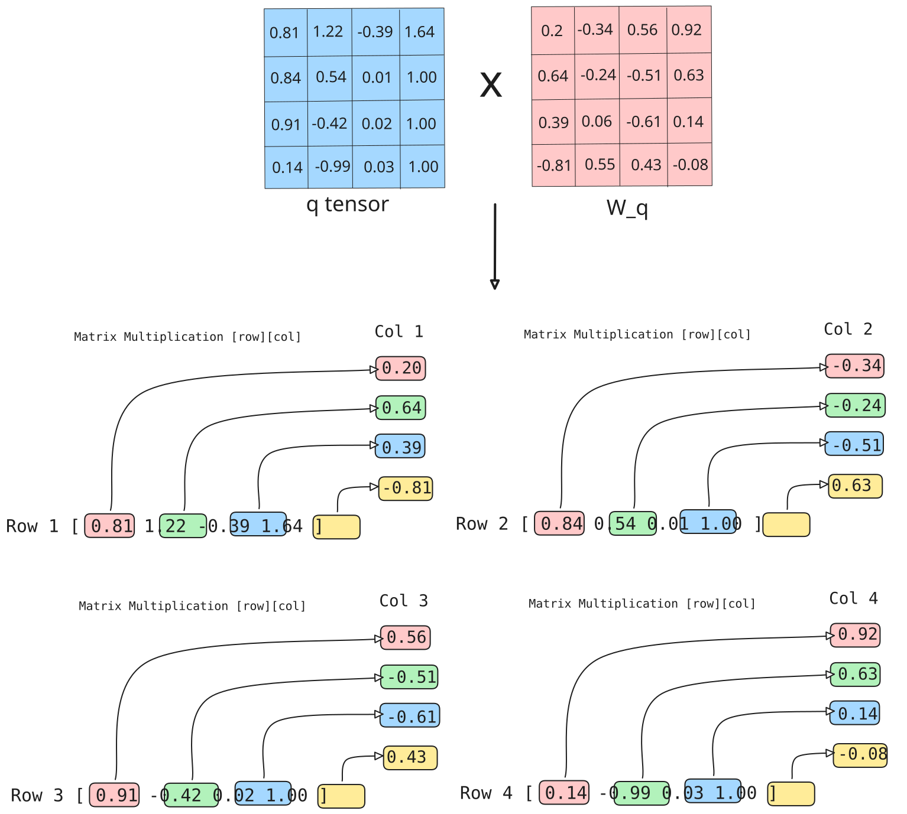
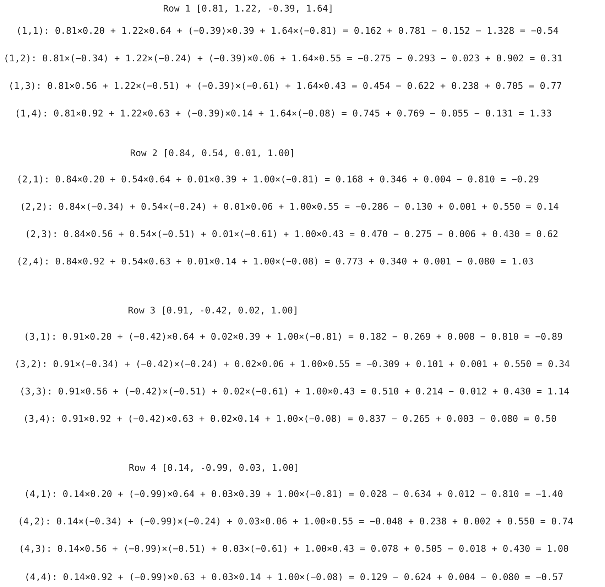
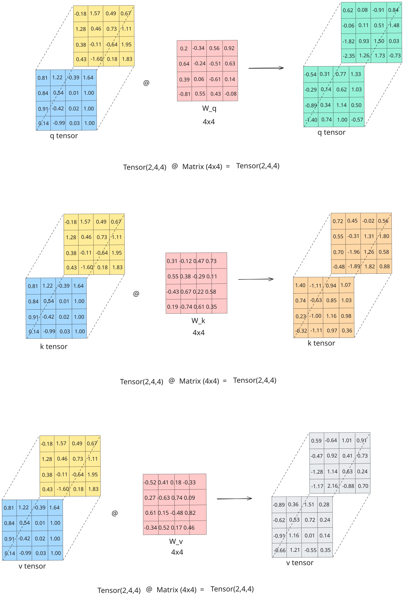
After projecting through W_Q, W_K, and W_V, all three tensors remain (2, 4, 4). The shapes haven't changed, only what the values mean. Q now lives in "query space," K in "key space," V in "value space." These spaces are where similarity (between Q and K) and content (from V) have the relationships the model needs to learn.

Splitting into heads
One attention pattern over all 4 dimensions can only learn one type of relationship. With two heads, we split the 4 dimensions in half, each head gets d_k=2 dimensions, and two separate attention patterns can run in parallel. One head might learn to attend to syntactically related tokens; another might focus on semantic similarity. The model figures out the specialization; we just give it the capacity to specialize.
The split is a reshape + transpose. (2, 4, 4) → view → (2, 4, 2, 2) → transpose(1,2) → (2, 2, 4, 2). Reading the dimensions: batch × heads × sequence × d_k.
Scaled dot-product attention
Q is (2, 2, 4, 2). K transposed is (2, 2, 2, 4). Their product gives attention scores of shape (2, 2, 4, 4): for every batch, every head, every query position scored against every key position. Then divided by \(\sqrt{d_k} = \sqrt{2} \approx 1.414\).
Why the square root? In high dimensions, dot products grow large, they scale with dimension. Large values push softmax toward saturation, where outputs are near 0 or 1 and gradients near zero. Dividing by \(\sqrt{d_k}\) keeps scores in a range where softmax has meaningful gradients and the model can actually learn. It's a small intervention with a big effect on trainability.


Weighted sum of values, then W_O
Attention scores (2, 2, 4, 4) multiplied by V (2, 2, 4, 2) gives a weighted sum of value vectors, each query position gets a blend of all value vectors, weighted by attention. Result shape: (2, 2, 4, 2).

This (2, 2, 4, 2) tensor is the per-head output, what each head computed independently. The actual values going into W_O:
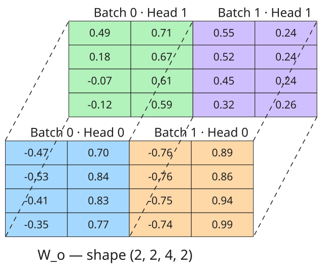
Now the heads need to be combined. We transpose back to (2, 4, 2, 2), then reshape to (2, 4, 4), the two heads are concatenated along the feature dimension. Finally, W_O mixes the concatenated output. Why W_O? Because the concatenated heads (head 0's 2 dims followed by head 1's 2 dims) are independent, W_O lets the model learn how to blend information across heads.
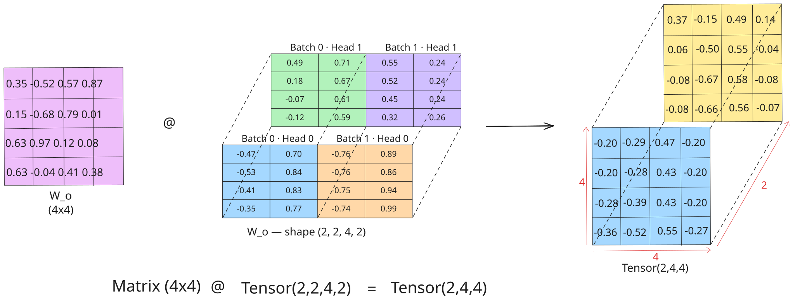


Encoder: Add & Norm
The attention output is good, but two problems need solving before we pass it forward.
Problem 1: vanishing gradients. During backprop, gradients have to flow backward through every layer. Without intervention, they tend to shrink as they pass through each operation, by the time they reach the early layers, they're near zero and those layers stop learning. The residual connection is the fix: instead of replacing the input with the attention output, we add the attention output to the input. This gives gradients a direct shortcut path. They can flow straight through the addition, bypassing the entire attention block if needed. Deep networks become trainable.
There's also an interpretational benefit: the attention block doesn't need to carry all the information. It just needs to encode the change, what's new after attending, and the original is preserved automatically.
Problem 2: scale instability. Different inputs can produce wildly different activation magnitudes. If some layers see huge values and others see tiny ones, the learning dynamics break down, weight updates that work for one scale are wrong for another. LayerNorm fixes this by normalizing each position's vector to have mean ≈ 0 and standard deviation ≈ 1 across the d_model dimensions, regardless of input scale.
\(\gamma\) (scale) starts at 1 and \(\beta\) (shift) starts at 0, learned parameters that let the network re-scale the normalized output if needed. The normalization runs over d_model=4 values per position, independently for each of the 8 positions (2 batches × 4 tokens).

Residuals preserved, activations normalized. The representation is stable and ready for the next transformation, one that works not across positions, but within each position independently.
Encoder: Feed-Forward Network
class FeedForward(nn.Module):
def __init__(self, d_model: int):
super().__init__()
self.linear1 = nn.Linear(d_model, d_model * 4) # 4 → 16
self.relu = nn.ReLU()
self.linear2 = nn.Linear(d_model * 4, d_model) # 16 → 4
def forward(self, x):
return self.linear2(self.relu(self.linear1(x)))
Attention handled cross-position communication: every token gathered information from every other token. But something is still missing. The model needs to process and transform that gathered information, not just mix it, but reason about it.
That's the FFN's role. It takes each position's 4-dimensional vector and runs it through a two-layer network independently. No interaction between positions here, each token is processed in isolation. The FFN can be thought of as "given everything this token learned by attending to the sequence, how should its representation change?"
The expansion to 16 dimensions (d_ff = 4 × d_model) matters. A sequence of linear layers with no non-linearity collapses to a single linear transformation, you gain nothing by stacking them. Expanding into higher-dimensional space, applying ReLU, then compressing back introduces genuine non-linearity. The network learns richer patterns than any single linear layer could. In GPT-2, d_ff = 4 × 768 = 3,072. Same ratio, same idea, just larger.


The FFN output goes through a residual connection and LayerNorm for the same reason as after attention. One encoder block is complete: MHA, Add & Norm, FFN, Add & Norm. The representation is now richer than when we started, and still shape (2, 4, 4).
Encoder Output
class EncoderBlock(nn.Module):
def __init__(self, d_model: int, num_heads: int):
super().__init__()
self.attention = MultiHeadAttention(d_model, num_heads)
self.feed_forward = FeedForward(d_model)
self.norm1 = nn.LayerNorm(d_model)
self.norm2 = nn.LayerNorm(d_model)
def forward(self, x, mask=None):
x = self.norm1(x + self.attention(x, x, x, mask))
x = self.norm2(x + self.feed_forward(x))
return x
class Encoder(nn.Module):
def __init__(self, d_model: int, num_heads: int, num_layers: int = 6):
super().__init__()
self.layers = nn.ModuleList([
EncoderBlock(d_model, num_heads) for _ in range(num_layers)
])
def forward(self, x, mask=None):
for layer in self.layers:
x = layer(x, mask)
return x
One encoder block produces (2, 4, 4). In the original "Attention Is All You Need" paper, this block is stacked N=6 times. Each pass refines the representation, early blocks tend to capture local patterns and syntactic structure; later blocks capture longer-range dependencies and abstract semantics. We run it once here, but the principle scales directly.
The output of the final encoder layer is not just a transformed version of the input, it's a context-rich representation of the entire source sentence. Every position's vector now encodes not just "what word am I," but "what word am I, given everything else in this sentence." This is what the decoder will read from during cross-attention.

The encoder is done. It took English token IDs and produced a (2, 4, 4) context tensor. Now the decoder takes that context and uses it to generate German, one position at a time in inference, all positions in parallel during training.
Decoder: Setup & Embeddings
The decoder has three sub-layers instead of the encoder's two. Each one serves a distinct purpose, and understanding why all three exist is key to understanding why the decoder can generate coherent translations.
Masked self-attention lets the decoder look at its own previous output, the German tokens generated so far. The mask enforces a causal constraint: position i can only attend to positions 0 through i. This simulates the actual inference condition, where you genuinely don't know future tokens yet.
Cross-attention is where the decoder reads the encoder. Using the output of masked self-attention as queries, the decoder asks: "given what I'm generating right now, which parts of the English source sentence are most relevant?" The encoder output provides the keys and values to answer that question.
Feed-forward does the same position-wise transformation as in the encoder, processing each position's combined representation independently.

The decoder input is the German target sequence. During training, we feed the full target at once (teacher forcing) and rely on the mask to prevent cheating. The German token IDs go through the same embedding + positional encoding pipeline as the English sequence, using the German vocab embeddings.
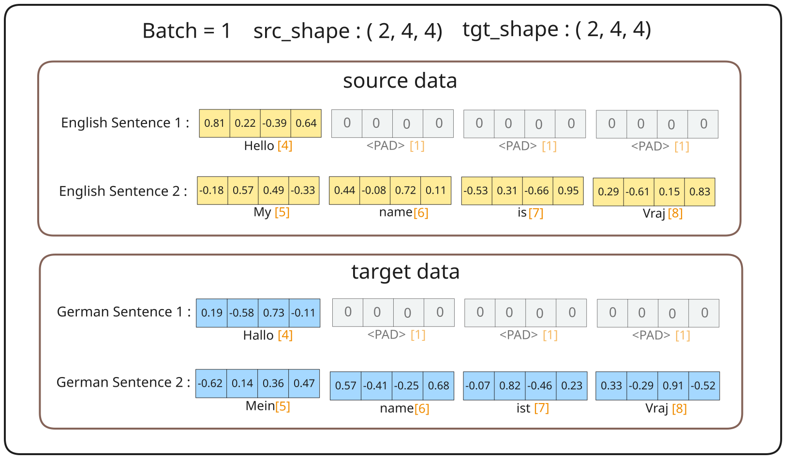
Both samples stacked into a single (2, 4, 4) batch tensor.
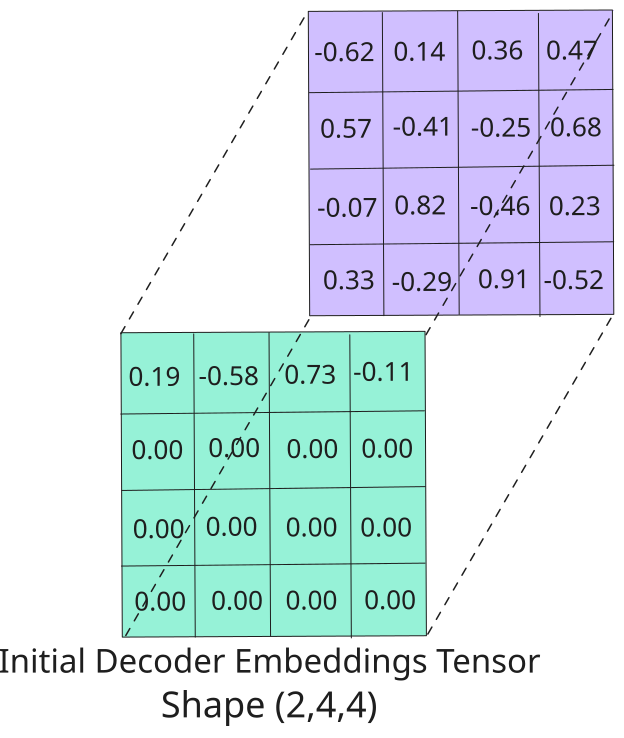
Sinusoidal positional encoding added element-wise — each position gets a unique shift.


The shifted tensor is the decoder's only signal about token order.

The decoder has its input ready: a positionally-encoded (2, 4, 4) German tensor. It goes into masked self-attention first, same mechanics as encoder attention, with one critical addition.
Decoder: Masked Multi-Head Attention
class DecoderBlock(nn.Module):
def __init__(self, d_model: int, num_heads: int):
super().__init__()
self.masked_attention = MultiHeadAttention(d_model, num_heads)
self.cross_attention = MultiHeadAttention(d_model, num_heads)
self.feed_forward = FeedForward(d_model)
self.norm1 = nn.LayerNorm(d_model)
self.norm2 = nn.LayerNorm(d_model)
self.norm3 = nn.LayerNorm(d_model)
def forward(self, x, enc_output, src_mask, tgt_mask):
# 1. Masked self-attention: decoder attends to itself causally
x = self.norm1(x + self.masked_attention(x, x, x, tgt_mask))
# 2. Cross-attention: decoder Q, encoder K and V
x = self.norm2(x + self.cross_attention(x, enc_output, enc_output, src_mask))
# 3. Feed-forward
x = self.norm3(x + self.feed_forward(x))
return x
Why the mask?
During training, we feed the entire target sequence at once, that's what makes training efficient and parallelizable. But there's a danger: without any constraint, position 3 could attend to position 4 and essentially "copy" the answer rather than learning to predict it. The model would cheat its way through training and learn nothing useful.
The causal mask prevents this. It's a lower-triangular matrix: position 0 can only attend to position 0. Position 1 can attend to positions 0 and 1. Position 2 can attend to positions 0, 1, and 2. Every future position is blocked. This reproduces, during training, the exact information constraint the model faces at inference time, where future tokens genuinely don't exist yet.
The masking is implemented simply: wherever the mask is 0, the attention score is set to −1e9. After softmax, e^(−1e9) ≈ 0.00 exactly. The model cannot attend to those positions, the weight is zero.
The projection through W_Q, W_K, W_V, and the head-split mechanics are identical to the encoder. Only the mask is new.
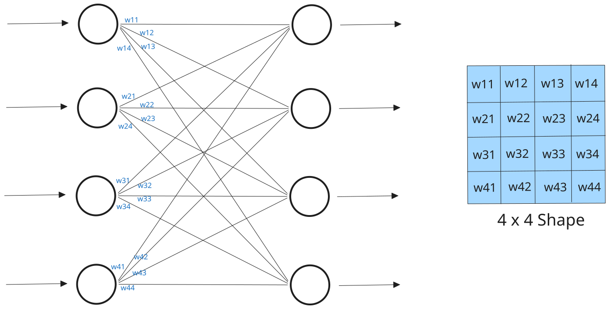
The four weight matrices for this block, all randomly initialized.
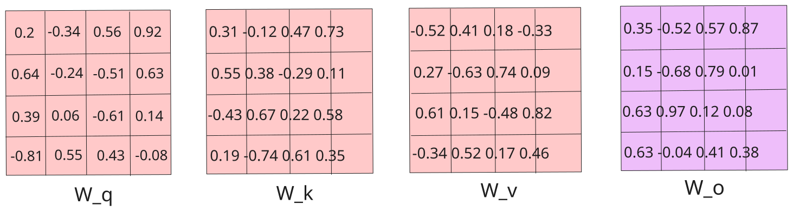
The post-PE decoder tensor enters as Q, K, and V — three identical copies, same as encoder self-attention.

Q, K, V projected separately through their weight matrices:

Q = x · W_Q.T

K = x · W_K.T

V = x · W_V.T
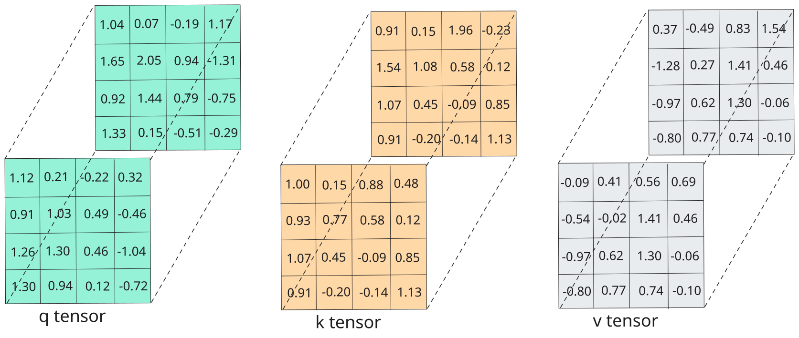
Q × K^T divided by √d_k — raw attention scores before the mask is applied.
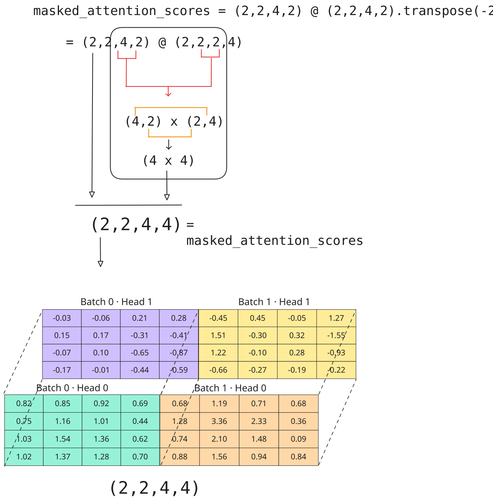
The unmasked scores for both batches, shape (2, 2, 4, 4).
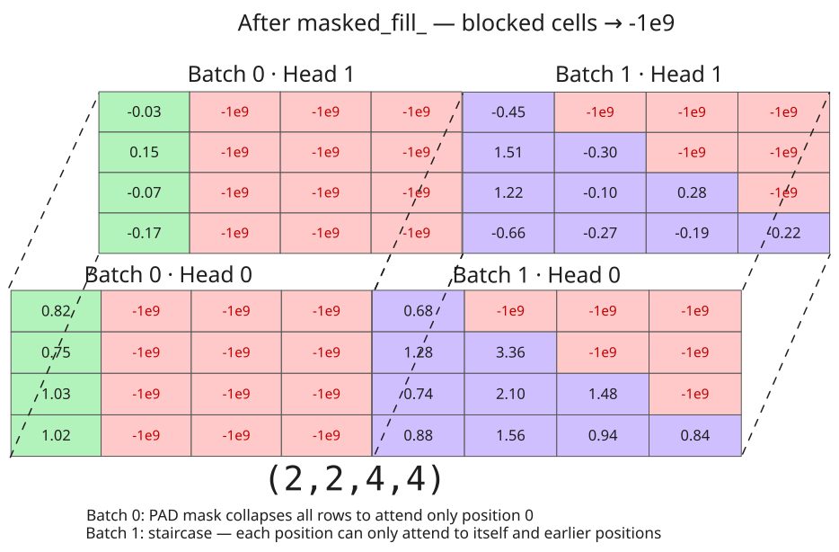
The raw scores are computed. Now the mask is applied, future positions and PAD tokens get set to −1e9.


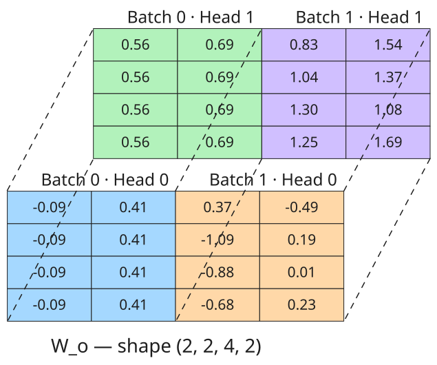
The per-head context vectors — each position holds a weighted blend of value vectors from allowed positions.
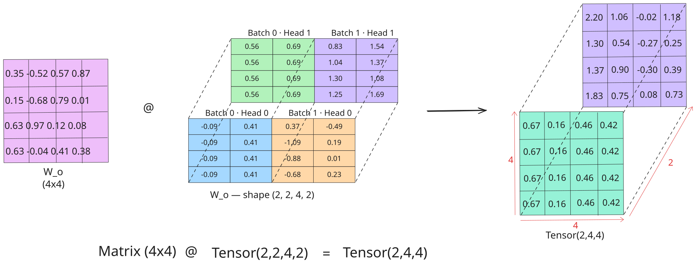
Heads concatenated and W_O applied, collapsing (2, 2, 4, 2) back to (2, 4, 4).
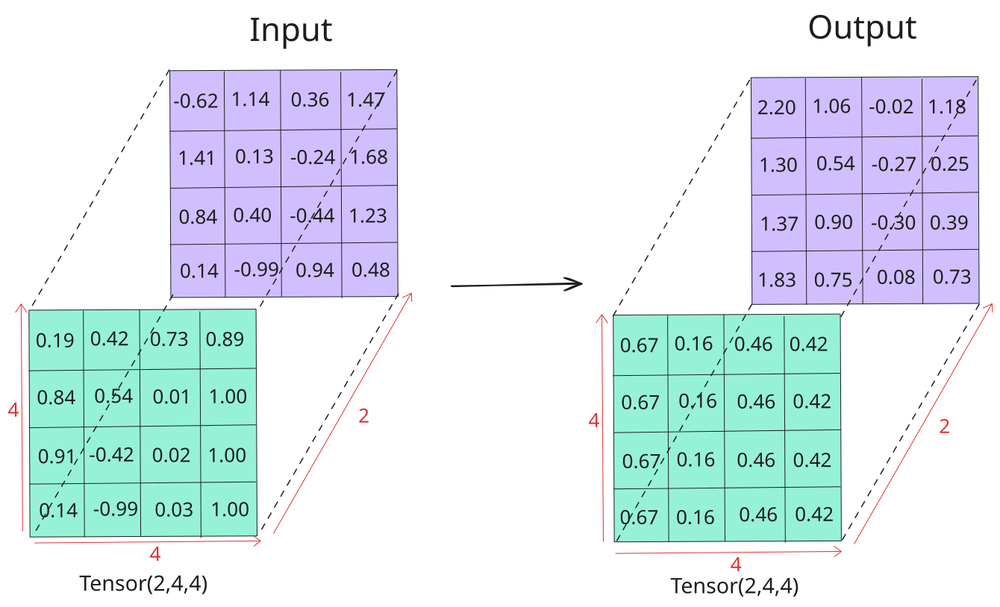
Residual added and LayerNorm applied.

The decoder has attended to itself, respecting the causal constraint. It now knows its own context, what German tokens came before. Next: attend to the encoder, which knows the English source.
Decoder: Cross-Attention
# Inside DecoderBlock.forward():
x = self.norm2(x + self.cross_attention(x, enc_output, enc_output, src_mask))
# ^ ^ ^ ^
# Q K V pad mask only
# (from decoder) (from encoder output)
Why this exact Q, K, V assignment?
Cross-attention is the bridge between the encoder and decoder, and the Q/K/V assignment encodes the direction of information flow precisely.
Q comes from the decoder's current representation, the output of masked self-attention. This is the decoder's current best understanding of what it's trying to generate at each position. The Q is the question: "I'm generating token at position i, which parts of the English source sentence are relevant to what I need to produce?"
K and V both come from the encoder output. The encoder has already built a rich, context-aware representation of the full English sequence. K provides the index for the decoder to match against; V provides the actual content to extract. High dot product between a decoder query and an encoder key means "this English position is relevant to what the decoder is currently generating."
There's no causal mask in cross-attention. The decoder is allowed to look at the entire source sentence, past and future positions alike. A causal constraint on the source makes no sense: when generating German word at position 2, you absolutely should be able to reference English word at position 3. Only PAD positions in the source are blocked.

Q = decoder · W_Q.T

K = enc_out · W_K.T

V = enc_out · W_V.T
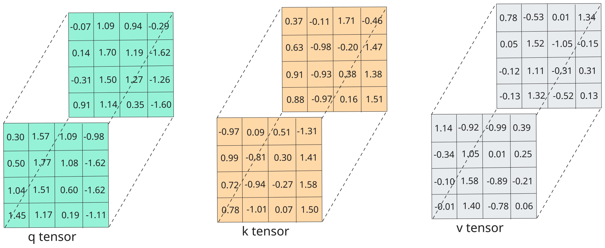
Decoder Q against encoder K: Q × K^T / √d_k scores which source positions each target position should attend to.
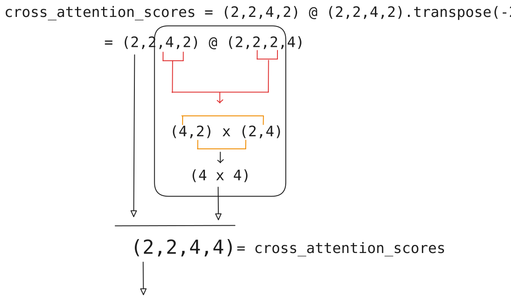
Raw cross-attention scores — one row per decoder position, one column per encoder position.
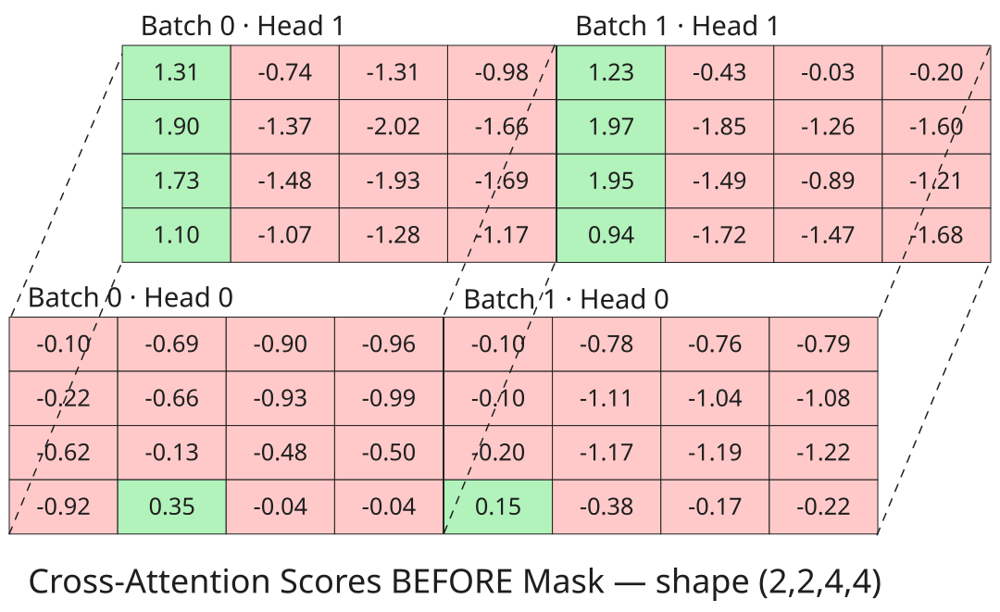

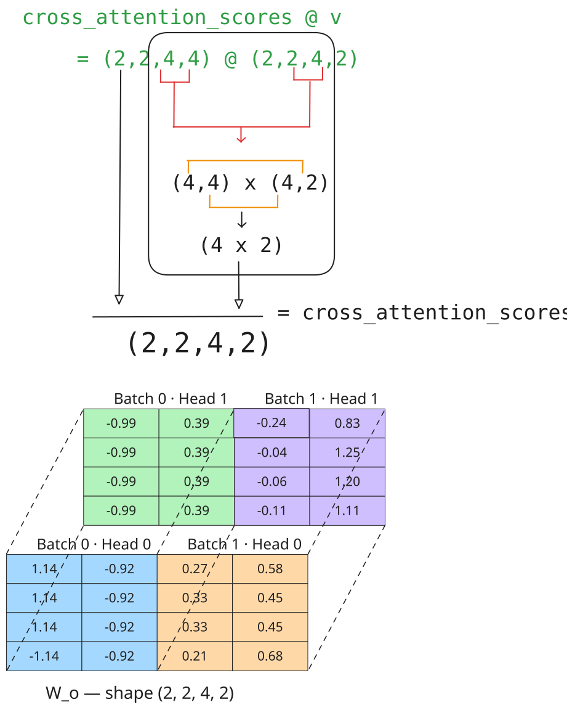
W_O projects the concatenated heads back to (2, 4, 4), mixing information across heads.
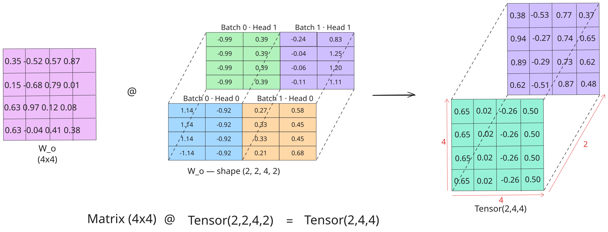
Residual added, LayerNorm applied. Cross-attention output: (2, 4, 4).

Cross-attention is done. Each decoder position now carries a blend of its own causal context (from masked MHA) and the most relevant parts of the English source (from cross-attention). The FFN processes this combined representation one position at a time.
Decoder: FFN & Predictions
The FFN is structurally identical to the encoder's: Linear(4→16), ReLU, Linear(16→4), residual Add & Norm. Each decoder position is processed independently. What's different is what those vectors carry — by now, each one has absorbed cross-attention context from the English source on top of the causal self-attention context from masked MHA.
Step 1: the FFN expands to 16 dims, applies ReLU, then compresses back. Residual added, LayerNorm applied — the third sub-layer's Add & Norm.
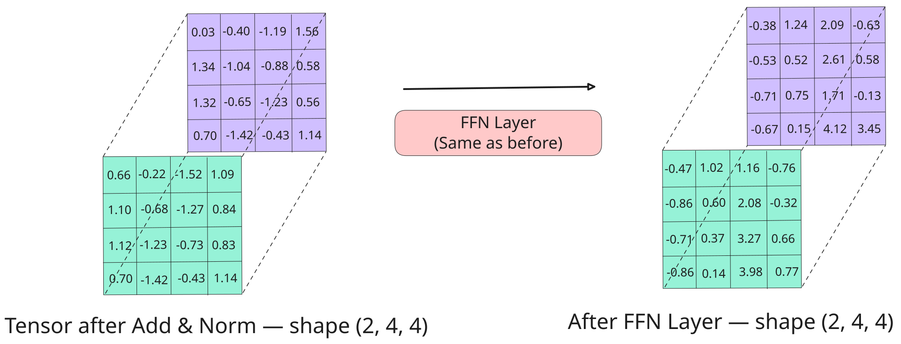
Step 2: that output is added back to the cross-attention result (the second residual connection) and normalized — completing the full decoder block.
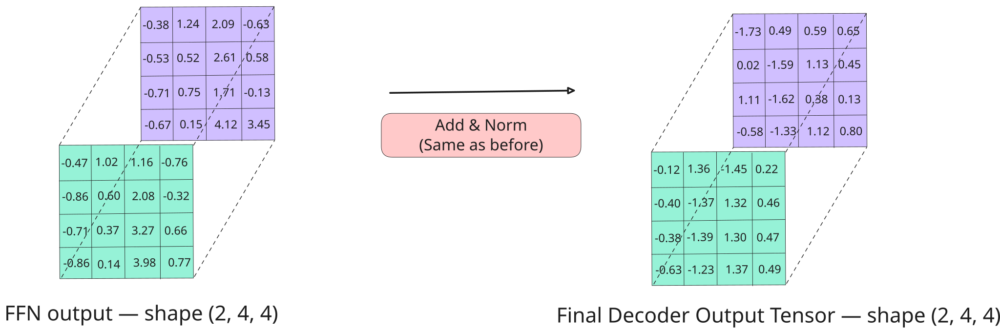
The final decoder output: each position's vector now encodes both source context (from cross-attention) and target-side causal history (from masked MHA).

The decoder block is done. Shape: (2, 4, 4). What's left is the question the whole trace has been building toward: which German word does each position actually predict? The decoder output is in d_model=4 space. We need one score per vocabulary token.
class ProjectionLayer(nn.Module):
def __init__(self, d_model: int, vocab_size: int):
super().__init__()
self.linear = nn.Linear(d_model, vocab_size) # 4 → 14
def forward(self, x):
# (batch, seq_len, d_model) → (batch, seq_len, vocab_size)
return torch.log_softmax(self.linear(x), dim=-1)
One linear layer maps each position's 4-dimensional vector to a 14-dimensional score vector — one score per German word. These are raw logits: unnormalized values where higher means the model favors that token. The projection forces the model to commit: the continuous d_model representation doesn't yet say "I think the next word is hallo," but the vocab-space scores do.
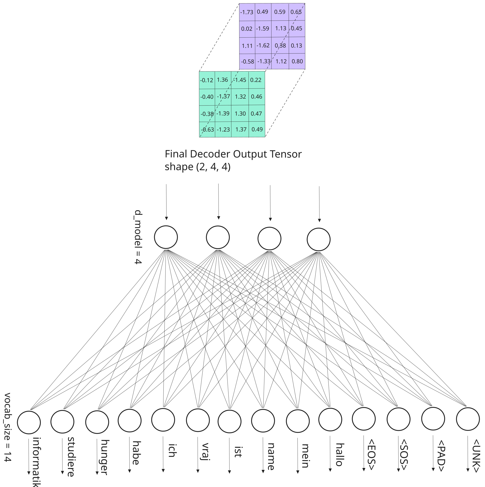
Each position's 4-dim vector multiplied by W_proj (4×14) — one raw score per German word.

After the linear: shape (2, 4, 14). Softmax over the last dimension turns raw logits into probabilities summing to 1.0. Each of the 8 positions now holds a full distribution over all 14 German tokens.


Shape (2, 4, 14) → argmax over last dim → (2, 4). Token IDs in, token IDs out. The model started and ended with the same shape — only the content changed.
What Comes Next
Here's the full journey, retraced one last time:
The forward pass is done. The model produced predictions, token IDs for each position in the output sequence. With random weights, those IDs are meaningless. Training is the process of making them meaningful.
Training takes the predicted probability distributions (the (2, 4, 14) softmax output) and compares them to the ground truth German token IDs using cross-entropy loss. Cross-entropy measures the gap: a perfect distribution would put 100% probability on the correct token; a random one spreads it across all 14. Backpropagation then computes how much each weight in the entire network contributed to that error, and gradient descent adjusts every weight matrix by a small amount in the direction that reduces the loss. Run that loop on enough sentence pairs for enough iterations, and the weights converge from random noise to something that actually translates.
Inference is different from what this trace showed. During training, we fed the entire target sequence to the decoder at once and used masking to prevent future-token access. At inference time, we don't have the target sequence, that's what we're trying to generate. So the decoder runs autoregressively: feed <SOS>, take argmax of position 0, feed that token back as the next input, repeat until the model generates <EOS>. The encoder runs once; the decoder runs n times for an n-token translation. It's slower, but there's no other way, each token depends on the ones before it.
The code and full notes for this trace: GitHub repo and full notes (PDF). The d_model=4 configuration is a toy, but every operation here is identical to GPT-2 (d_model=768, 12 heads, 12 layers) and GPT-3 (d_model=12,288, 96 heads, 96 layers). Different scale, same math. If you followed this trace, you followed them too.